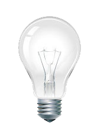

Projeto Lâmpada HARDCORE-MODE

Sobre o Projeto
- 1° Botão ligar: liga a lampada.
- 2° Botão desligar: desliga a lampada
- 3° Botão Restaurar: faz a lampada quebrada voltar ao normal
- OBSERVAÇÕES:
- Passar o mouse por cima da lampada ela liga, se tirar ela apaga
- Duplo clique na lampada ela quebra.
- Caso a lampada estiver quebra os botões ligar e desligar não funcionam.
- Caso a lampada não estiver quebra o botão Restaurar não funciona.
- O botão desligar começa inativo, só funciona se a lampada estiver ligada
- O botão restaurar começa inativo, só funciona se a lampada estiver quebrada
- Caso a lampada estiver quebrada os botões ligar e desligar ficam inativos
- Fundo muda de cor conforme lâmpada ligada, desligada e quebrada